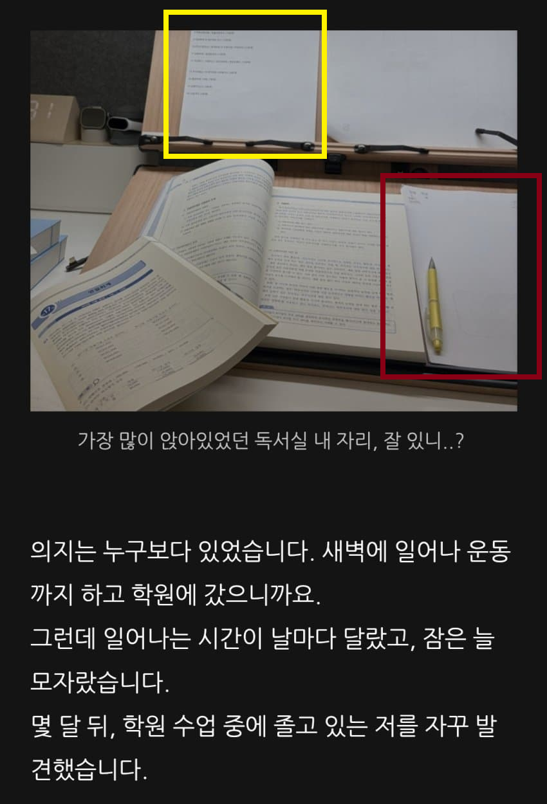
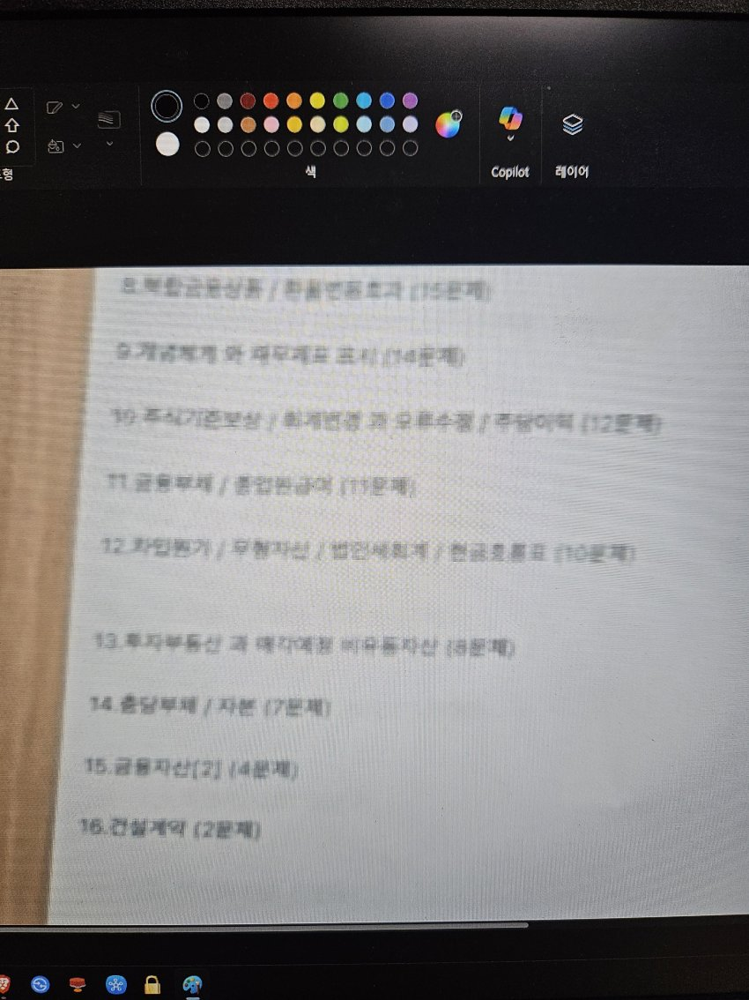
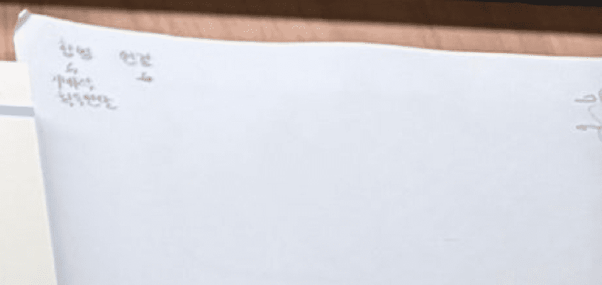
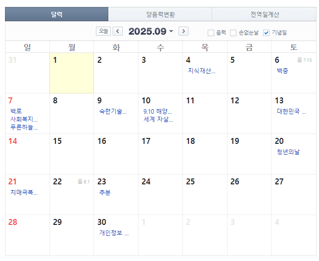

개꿀잼이라 빨간색 키워봄

아아 이것이 백지복습법인가
오른쪽 위는 발기조절하고 보니깐

25년 9월 달력이고 아마 무슨공부 했는지 적은걸까 역시 갓갓냥이
22일 23일엔 체계적인 공부한것좀 봐
찬양 또 찬양합니다


개꿀잼이라 빨간색 키워봄

아아 이것이 백지복습법인가
오른쪽 위는 발기조절하고 보니깐

25년 9월 달력이고 아마 무슨공부 했는지 적은걸까 역시 갓갓냥이
22일 23일엔 체계적인 공부한것좀 봐
찬양 또 찬양합니다
댓글
수집 당시 댓글 160개
· ㅇㅇ · 11.13 18:43:54
ㅇㅇ · 11.13 17:51:48
mion · 11.13 17:51:49
· ㅇㅇ · 11.13 17:53:51
ㅇㅇ · 11.13 17:52:27
· ㅇㅇ · 11.13 17:53:37
ㅇㅇ · 11.13 17:52:45
· ㅇㅇ · 11.13 18:38:52
ᆢ · 11.13 17:53:22
· ᆢ · 11.13 17:55:48
· ㅇㅇ · 11.13 18:28:49
· ㅇㅇ · 11.13 18:35:14
· ᆢ · 11.13 19:09:47
· ㅇㅇ · 11.13 19:13:07
ㅇㅇ · 11.13 17:53:33
· ㅇㅇ · 11.13 17:55:36
· ㅇㅇ · 11.13 17:55:39
· ㅇㅇ · 11.13 17:56:57
· ㅇㅇ · 11.13 18:11:34
· ㅇㅇ · 11.13 18:36:07
ㅁㅁ · 11.13 17:54:09
ㅇㅇㅇ · 11.13 17:56:25
ㅇㅇ · 11.13 17:56:31
ㅇㅇ · 11.13 17:57:14
· ㅇㅇ · 11.13 17:59:48
· ㅇㅇ · 11.13 18:23:08
ㅇㅇ · 11.13 17:57:16
ㅇㅇ · 11.13 17:57:20
우리아이ai안경사줘야겠다이제의대간다~
ㅇㅇ · 11.13 17:57:35
ㅇㅇ · 11.13 17:57:43
· ㅇㅇ · 11.13 18:21:03
ㅇㅇ · 11.13 17:57:53
ㅇㅇ · 11.13 17:58:14
뻘짓 열심히 한 사람만 손해지머
· ㅇㅇ · 11.13 17:59:34
ai를무시한죄
DC전사쿠루미쨩 · 11.13 17:58:54
ㅇㅇ · 11.13 18:00:25
ㅇㅇ · 11.13 18:01:36
ㅇㅇ · 11.13 18:01:43
Ai안경으로 아이들을 교육하라
ㅇㅇ · 11.13 18:02:23
공부머리기득권 컷!
ㅇㅇ · 11.13 18:03:55
지식의 민주화
ㅇㅇ · 11.13 18:04:24
ㅇㅇ · 11.13 18:07:03
ㅇㅇ · 11.13 18:07:05
ㅇㅇ · 11.13 18:08:10
ai한테 따잇!ㅋㅋㅋㅋㅋㅋㅋㅋ
ㅇㅇ · 11.13 18:10:03
ㅇㅇ · 11.13 18:10:35
기초적인 임플란트
알카 · 11.13 18:12:58
ㅇㅇ · 11.13 18:13:19
ㅇㅇ · 11.13 18:13:27
ㅇㅇ · 11.13 18:15:15
· ㅇㅇ · 11.13 18:15:20
· ㅇㅇ · 11.13 18:16:53
· ㅇㅇ · 11.13 18:17:45
· ㅇㅇ · 11.13 18:18:41
· ㅇㅇ · 11.13 18:19:37
· ㅇㅇ · 11.13 18:27:08
ㅇㅇ · 11.13 18:16:46
딸랑딸랑고추 · 11.13 18:17:48
ㅇㅇ · 11.13 18:18:01
· ㅇㅇ · 11.13 18:18:28
· ㅇㅇ · 11.13 18:20:21
· ㅇㅇ · 11.13 18:22:10
· ㅇㅇ · 11.13 18:26:37
· ㅇㅇ · 11.13 18:28:48
· Vegetable40k · 11.13 18:28:58
· ㅇㅇ · 11.13 18:31:26
· ㅇㅇ · 11.13 18:43:39
ㅇㅇ · 11.13 18:18:43
ㅇㅇ · 11.13 18:19:31
유강민 · 11.13 18:20:25
ㅇㅇ · 11.13 18:23:21
ㅇㅇ · 11.13 18:24:56
ㅇㅇ · 11.13 18:25:03
억울하면 너도 ai안경 사 ㅋㅋ
ㅇㅇ · 11.13 18:28:42
· ㅇㅇ · 11.13 18:30:05
ㅇㅇ · 11.13 18:29:24
ㅇㅇ · 11.13 18:30:06
ㅇㅇ · 11.13 18:30:13
ㅇㅇ · 11.13 18:31:29
생산성 없는 공부충 컷!!
ㅇㅇ · 11.13 18:34:57
^ - ^ 책 거의 새것이네
ㅇㅇ · 11.13 18:35:33
ㅇㅇ · 11.13 18:35:56
ㅇㅇ · 11.13 18:37:10
· ㅇㅇ · 11.13 18:45:00
· ㅇㅇ · 11.13 18:48:18
· ㅇㅇ · 11.13 18:49:24
· ㅇㅇ · 11.13 19:00:22
ㅇㅇ · 11.13 18:37:53
· ㅇㅇ · 11.13 18:49:21
ㅇㅇ · 11.13 18:44:27
ㅇㅇ · 11.13 18:48:48
ㅇㅇ · 11.13 18:55:28
ㅇㅇ · 11.13 18:57:00
· ㅇㅇ · 11.13 18:58:59
· ㅇㅇ · 11.13 19:00:44
· ㅇㅇ · 11.13 19:02:00
· ㅇㅇ · 11.13 19:03:24
· ㅇㅇ · 11.13 19:09:38
· ㅇㅇ · 11.13 19:12:45
ㅇㅇ · 11.13 19:10:34
세뽕이1 · 11.13 17:12:57
· 이지러너 · 11.13 17:48:02
ㅇㅇ · 11.13 17:13:57
세뽕이2 · 11.13 17:14:56
ㅇㅇ · 11.13 17:15:29
세뽕이3 · 11.13 17:16:37
ㅇㅇ · 11.13 17:19:49
ㅇㅇ · 11.13 17:37:00
ㅇㅇ · 11.13 17:43:01
ㅇㅇ · 11.13 17:47:44
Ai안경=모든시험 만점에 도전하라
· ㅇㅇ · 11.13 17:47:53
넌강해졌다
· ㅇㅇ · 11.13 17:48:06
Ai안경으로인생역전에도전하라
· ㅇㅇ · 11.13 17:48:24
어머우리애언른ai안경사줘야겠다!
· ㅇㅇ · 11.13 17:48:37
1020대는Ai안경연습해라
· ㅇㅇ · 11.13 17:48:43
인공지능의위대함을보여줘라휴먼이여
· ㅇㅇ · 11.13 17:49:07
시험만점받으러가보자얘들아
ㅇㅇ · 11.13 17:47:59
· ㅇㅇ · 11.13 17:48:09
· ㅇㅇ · 11.13 17:48:23
· ㅇㅇ · 11.13 17:48:45
· ㅇㅇ · 11.13 17:48:51
· ㅇㅇ · 11.13 17:49:00
· ㅇㅇ · 11.13 17:49:09
· ㅇㅇ · 11.13 17:49:26
· ㅇㅇ · 11.13 17:49:34
· ㅇㅇ · 11.13 17:49:38
· ㅇㅇ · 11.13 17:49:40
· ㅇㅇ · 11.13 17:49:42
· ㅇㅇ · 11.13 17:49:50
· ㅇㅇ · 11.13 17:50:04
· ㅇㅇ · 11.13 17:50:10
· ㅇㅇ · 11.13 17:50:30
· ㅇㅇ · 11.13 17:59:06
· ㅇㅇ · 11.13 18:02:00
· ㅇㅇ · 11.13 18:07:08
· ㅇㅇ · 11.13 18:25:04
Vanitatum · 11.13 17:48:13
ㅇㅇ · 11.13 17:48:25
· 모하메드압두르후세인 · 11.13 17:49:08
· ㅇㅇ · 11.13 17:50:12
· 모하메드압두르후세인 · 11.13 17:51:08
· ㅇㅇ · 11.13 17:51:35
· ㅇㅇ · 11.13 17:52:03
· ㅇㅇ · 11.13 17:52:27
· 모하메드압두르후세인 · 11.13 17:57:07
· ㅇㅇ · 11.13 18:01:22
· ㅇㅇ · 11.13 18:01:25
· ㅇㅇ · 11.13 18:04:36
· ㅇㅇ · 11.13 18:09:45
· ㅇㅇ · 11.13 18:24:24
· ㅇㅇ · 11.13 18:25:56
· ㅇㅇ · 11.13 18:42:33
· ㅇㅇ · 11.13 18:55:38
ㅇㅇ · 11.13 17:50:18
어머우리애언른ai안경사줘야겠다!
파치카 · 11.13 17:50:40
· 샨테 · 11.13 17:51:13
· ㅇㅇ · 11.13 17:53:24
· 7times · 11.13 17:56:03
ㅇㅇ · 11.13 17:50:46
ㅇㅇ · 11.13 17:51:47